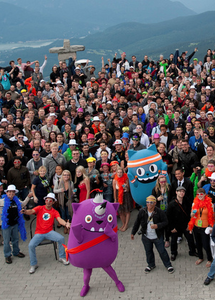
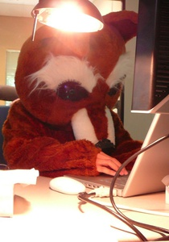
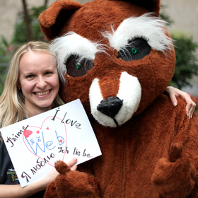
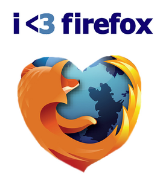
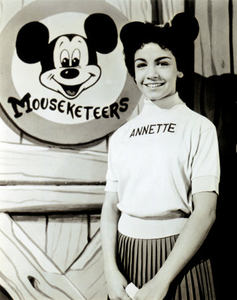
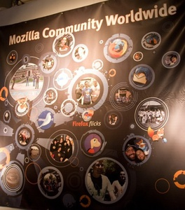

Join Mozilla
proposed membership program
v1: Dec 14 2010 / Mtn View + Air Mozilla
v2: Jan 11 2011 / blog post slidecast
Overview
Vision: clear, simple program where millions of people can identify and connect with Mozilla.
A part of Whistler commitment to grow supporters and community by 1000x.
Builds user engagement and donations programs that we’re already running.
Opportunity

-
400 million
people use Firefox. -
Millions know it’s about
more than just a browser. -
They want to be
part of what we stand for.
Today
-
We already have:
- 15,000 donors
- 200,000 mailing list members
- 3 million social media followers
- OK, but fragmented.
- Huge untapped potential to expand, create sense of belonging and connection.
Join Mozilla

Join Mozilla:
an easy way for
people to connect.
Help them understand.
Show their support.
Feel they belong.
Why?
Brand affinity for Firefox.
Bigger base to back (and grow): 50k Mozillians who donate time.
Fund programs (e.g. Drumbeat) = new tools and innovation.
Mozilla as something bigger.
Program Details
-
Affinity program for people who support Mozilla.
- Brings together pieces of existing user engagement and donations programs.
- $5 annually, chance to buy t-shirt or other swag.
- Once you join: we help you learn more, feel at home.
-
- Aim: help members grok the Mozilla firehose. Not ‘member only’ info’.
- Simple, concise updates on what’s happening with Mozilla and the web.
- Info on ways to get involved more deeply (if you want this).
- Funds go to support grants and projects.
Web Copy
Copy we’re considering for sign up page:
We’re a non-profit organization who believes the web should be free, open, accessible, transparent, safe and - most of all - a force for the good of humanity.
We’re the proud makers of Firefox and, every day, we strive to make the Web better. It’s our hood to protect and nurture, after all.
Protect the Web. Join Mozilla!
Timeline
- Q1 - Launch basic offering.
- Aim to launch before FF4.
- Integrate w/ FF4 launch, get first wave of members signed up.
- Q2 - Full offering, member care.
- Full selection of merchandise, plus info and get involved programs.
- Evolve messaging and user experience based on launch learning.
- Q4 - Major global event w/ community.
- ‘Webathon’ or similar event, run partly by community, many languages.
- Focus on consumer education about the web, telling your friends.
What it’s not!

A fan club
for Firefox.
A new governance
system for Mozilla.
A contributor community
(we have that, it’s awesome!).
We need help!
- Existing Mozillians are critical to success!
- Help shape Join Mozilla:
- Campaign ideas and names.
- Ideas to engage new members.
- And the reaching out to them.
- Events, local sites, etc.
- Most important: reach out to your neighbours.